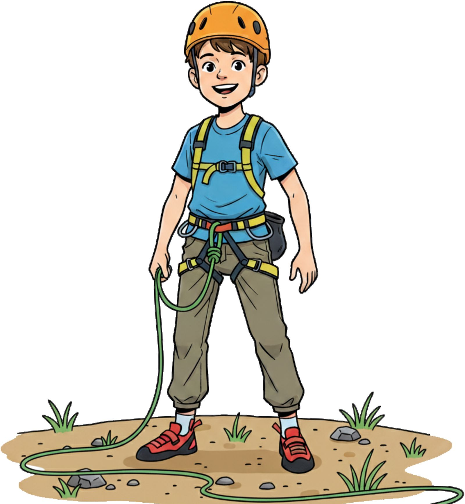

Les enfants rois
Petit secteur idéal pour s'initier, avec de belles voies de 4a+ à 6a.
Touchez une voie pour voir ses infos, appui long pour la retrouver dans la liste.
-
1
Projet
?Voie en projet
Inconnu
-
2
Vroum planète
5aBeau mur garni de bonnes prises.
Jean-Yves Salin
-
3
Les enfants rois
4bMagnifique fissure, avec des placements « pédagogiques » !
Jean-Yves Salin
-
4
Tralalire
5bJoli pilier, un tantinet physique vers le haut.
Jean-Yves Salin
-
5
Le nin-nin rouge
5bUn mur technique permet de rejoindre à gauche un joli dièdre suspendu. Toute une ambiance !
Jean-Yves Salin
-
5'
Trudi
5b+On peut, au 3e point, passer par la droite pour remonter tout droit dans la dalle : de belles réglettes sont à découvrir.
Jean-Yves Salin
-
6
Projet
?Voie en projet
Inconnu
-
7
Le projet d'enfer
?Projet non équipé
Philippe Caseiro
-
8
Le loup végétarien
4c+De beaux mouvements sur prises franches. Très agréable.
Jean-Yves Salin
-
9
Pirate tétine
5cSplendide voie, où il faut bien se placer pour valoriser la fissure finale.
Jean-Yves Salin
-
10
Cherche et trouve
6aPrises de mains et de pieds plus petites, plus loin : la plus dure du secteur !
Jean-Yves Salin
-
11
Flash Mac Queen
4a+Remonte une écaille franche puis un petit mur avec de bonnes réglettes « éloignées ».
Jean-Yves Salin
-
12
Artick Marmouset
6b+/cCette voie n'existe pas
Philippe Caseiro
-
13
La belle voie
5b+Une belle voie
Jean-Yves Salin
